America
Uruguay
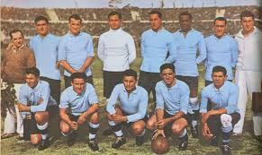
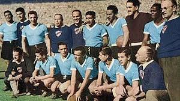
¿sabias que...?
1930-1950 🤪 En 1950 no hubo final solo hubo 2 fases de grupos “El Maracanazo”en realidad fue en la segunda fase de grupo
ir arribaBrasil
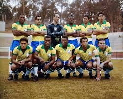
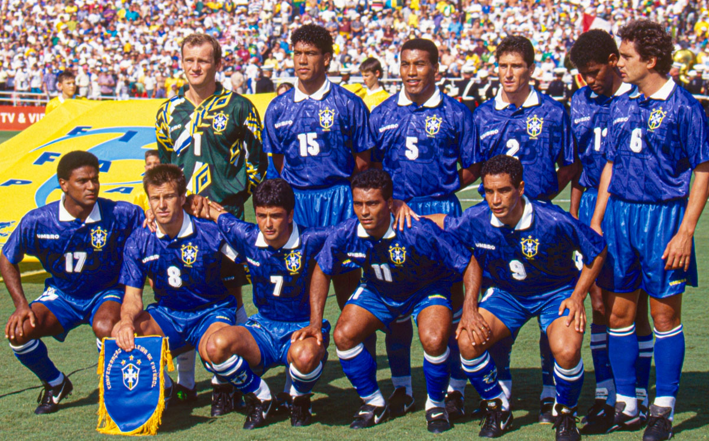
¿sabias que...?
1958-1962-1970-1994-2002 🤪 Brasil es el máximo campeón de las copas del mundo, también es la única selección en haber jugado todas las copas mundial
ir arribaArgentina
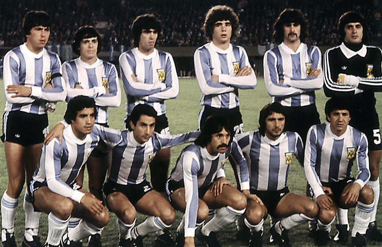
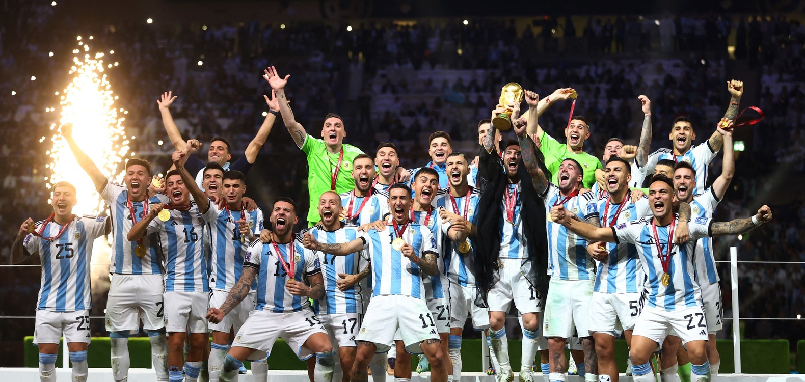
¿sabias que...?
1978-1986-2022 🤪 Argentina es el segundo país que jugó más mundiales, en el 1978 lo ganamos bajo una dictadura, en el 1986 los jugadores se fueron al norte para entrenar para méxico
ir arribaEuropa
Italia
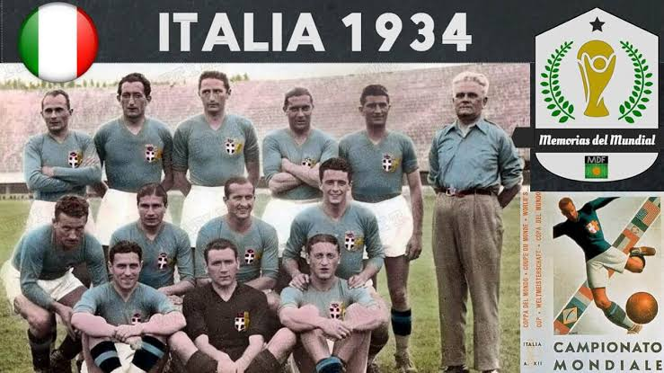

¿sabias que...?
1934-1938-1982-2006 🤪 Italia fue el segundo campeón del mundo también el primer bicampeón, lo unico que dos de sus 4 mundiales fueron comprados por el dictador Benito Mussolini
ir arribaAlemania
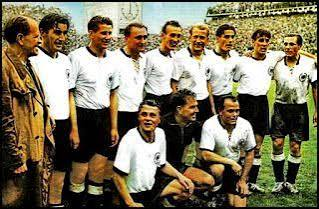
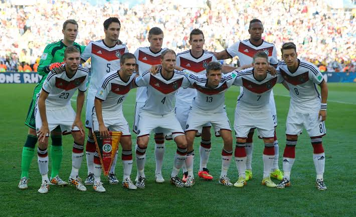
¿sabias que...?
1954-1974-1990-2014 🤪 Alemania es el segundo máximo campeón empatado con Italia pero Alemania es el máximo perdedor de los mundiales, (osea que perdió más finales)
ir arribaInglaterra
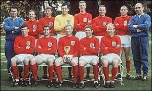
¿sabias que...?
1966 🤪 Inglaterra es de los pocos paises que solo ganaron un mundial, se dice que después de que inglaterra ganó esa final robandola se lanzó una maldición desde entonces no ganan ningún torneo internacional
ir arribaFrancia
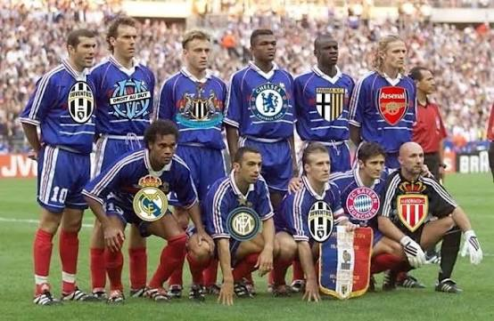
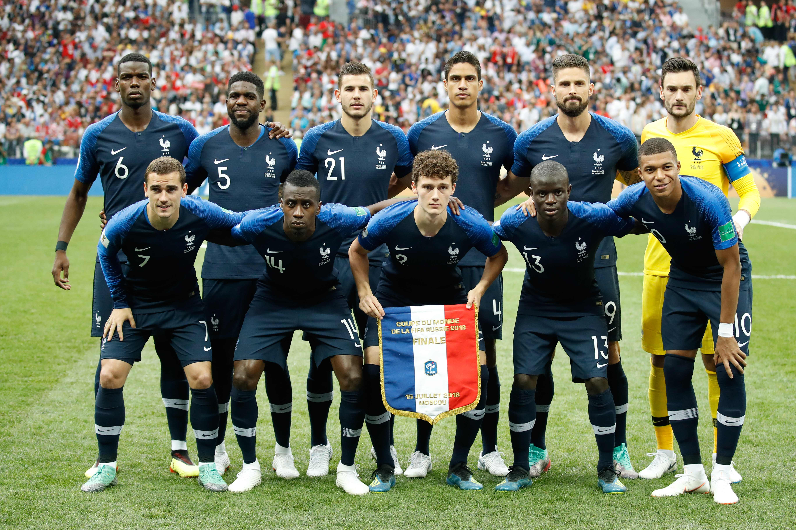
¿sabias que...?
1998-2018 🤪 Francia es el país que ganaron una final del mundo con más diferencia de goles por 3 goles le ganaron a Brasil, francia inició la maldición del campeón pero casi la rompe en 2022
ir arribaEspaña
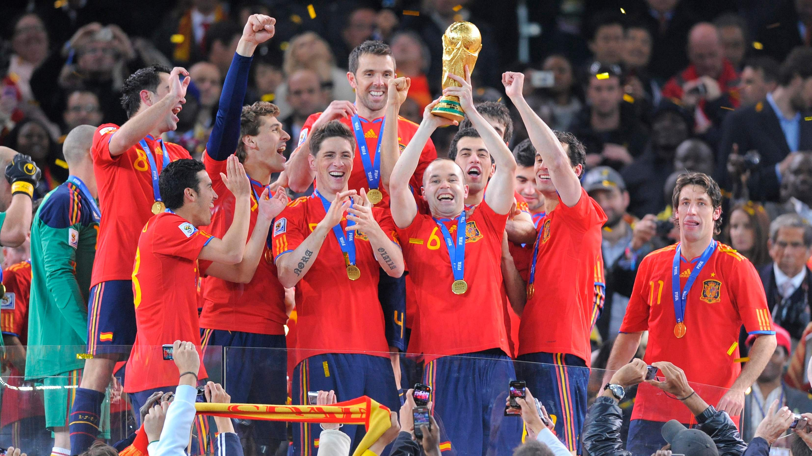
¿sabias que...?
2010 🤪 España es la última selección en haber ganado su primer mundial, España, Argentina y Alemania, todos estos tienen en común que les ganaron la final a países bajos
ir arriba